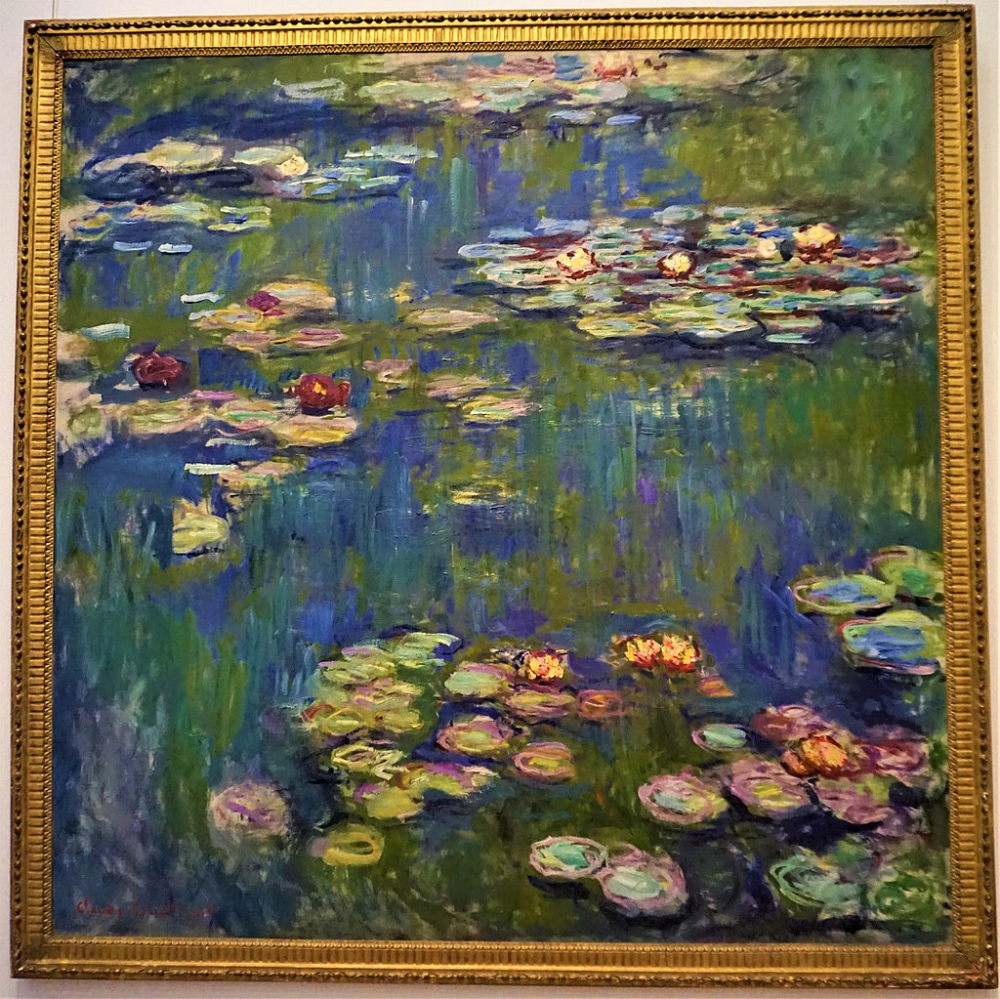

<head>
<meta charset="UTF-8" />
<meta name="keywords" content="drawing, painting" />
<meta name="description" content="drawings by Sunjy" />
<title>Sunjy</title>
<link rel="shortcut icon" type="image/x-icon" href="../../mImages/mCommon/favicon.ico" media="screen" />
<link rel="stylesheet" type="text/css" href="../../mCsses/mCommon/mCssA.css" />
<link rel="stylesheet" type="text/css" href="../../mCsses/mCommon/mCssB.css" />
<link rel="stylesheet" type="text/css" href="../../mCsses/mCommon/mCssC.css" />
<link rel="stylesheet" type="text/css" href="../../mCsses/mCommon/mCssD.css" />
<link rel="stylesheet" type="text/css" href="../../mCsses/mContent/mCssA.css" />
<link rel="stylesheet" type="text/css" href="../../mCsses/mContent/mCssB.css" />
<link rel="stylesheet" type="text/css" href="../../mCsses/mContent/mCssC.css" />
<link rel="stylesheet" type="text/css" href="../../mCsses/mContent/mCssD.css" />
</head>
<script type="text/javascript" src="../../mScripts/mContent/mContentAA.js" /></script>
<script type="text/javascript" src="../../mScripts/mContent/mContentAB.js" /></script>
<script type="text/javascript" src="../../mScripts/mContent/mContentAC.js" /></script>
<script type="text/javascript" src="../../mScripts/mContent/mContentAD.js" /></script>
<script type="text/javascript"></script> 
<script type="text/javascript">
document.write('<div class="mImgAbsolute"></div>');
/*
document.write('<p class="mFontSizeBColor" />From a white paper...</p>');
document.write('<table class="center"><tr><td>');
document.write('');
document.write('</td></tr></table>');
*/
</script>


<script type="text/javascript">
document.write('<p class="mFontSizeBColor" />Water Lilies</p>');
document.write('<p class="mFontSizeSColor" />By Claude Monet. “Water Lilies” portrays the waterlily pond, from Monet’s garden in Giverny, with the sky and sun reflecting off the lily pond.<br><br>Monet attempted to capture the continually changing qualities of light, color, water, sky, and lilies by dissolving all the elements into:<br><br>“a peaceful meditation in the center of a flowering aquarium.”<br><br>Claude Monet painted nearly 250 paintings in his series of “Water Lilies.” <br><br>The constant changes in the water surface, based on the direction of the sun during the day, the changing seasons, and the changing weather continued to sustain Monet’s interest in his water lilies pond.<br><br>This painting depicts Monet’s flower garden at his home in Giverny.<br><br>The garden and pond were the main focus of Monet’s artistic production during the last thirty years of his life. Many of these works were painted while Monet suffered from cataracts.<br><br>His “Water Lilies” paintings can be found in many museums across the globe.</p>');
document.write('<table class="center" /><tr><td>');
document.write('<br>Monet attempted to capture the continually changing qualities of light, color, water, sky, and lilies by dissolving all the elements into:<br><br>“a peaceful meditation in the center of a flowering aquarium.”<br><br>Claude Monet painted nearly 250 paintings in his series of “Water Lilies.” <br><br>The constant changes in the water surface, based on the direction of the sun during the day, the changing seasons, and the changing weather continued to sustain Monet’s interest in his water lilies pond.<br><br>This painting depicts Monet’s flower garden at his home in Giverny.<br><br>The garden and pond were the main focus of Monet’s artistic production during the last thirty years of his life. Many of these works were painted while Monet suffered from cataracts.<br><br>His “Water Lilies” paintings can be found in many museums across the globe." />');
document.write('</td></tr></table>');
</script>


